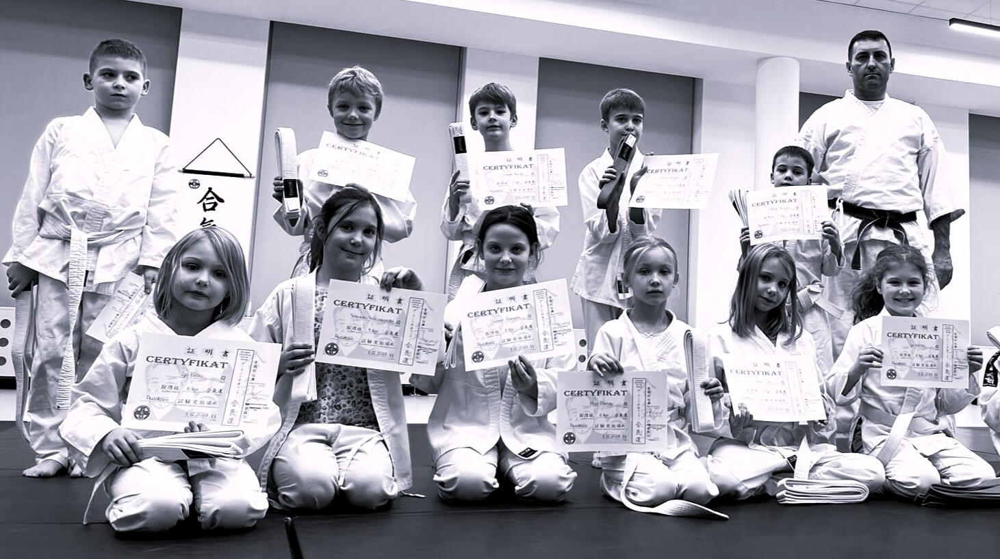

子 · KODOMODzieci młodsze
18.10 — 19.10 · wtorek
Treningi tej grupy to przede wszystkim zabawy ruchowe przeplecione ćwiczeniami ogólnorozwojowymi oraz podstawowymi elementami aikido. Staramy się, aby zajęcia kojarzyły się dziecku z przyjemnie spędzonym czasem, a zarazem podnosiły jego ogólną sprawność fizyczną.
Dzieci poznają podstawowe zasady obowiązujące w sztukach walki, liczą po japońsku, zaprzyjaźniają się z innymi dziećmi, uczą się dyscypliny i wytrwałości. Poprawiają koordynację ruchową, budują pewność siebie, przełamują strach przed starszymi.